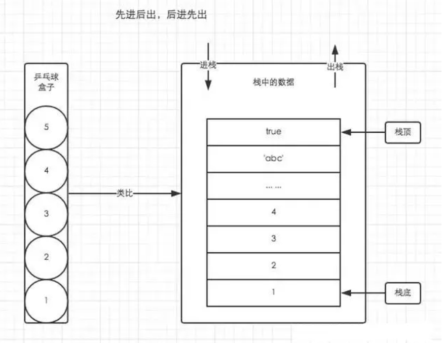
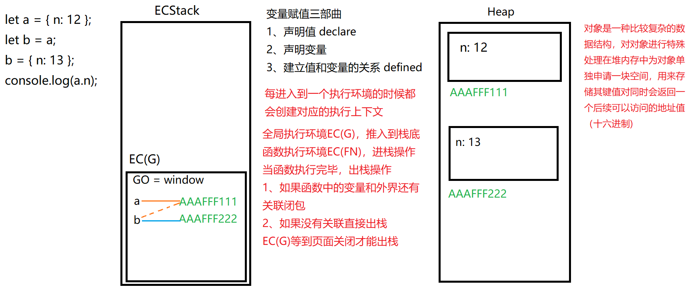
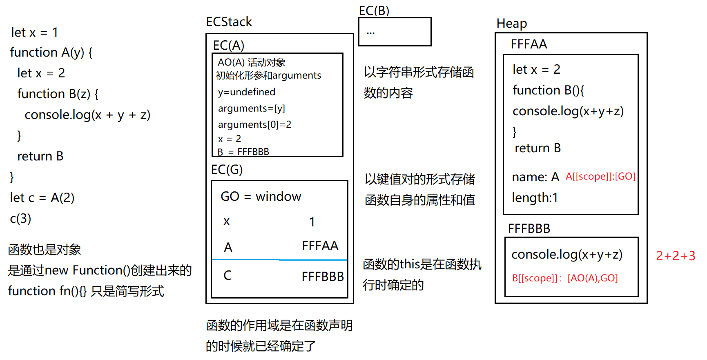
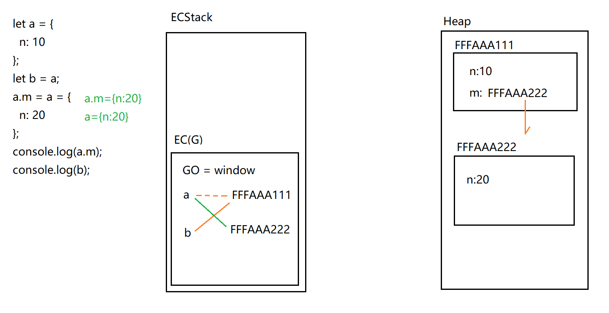
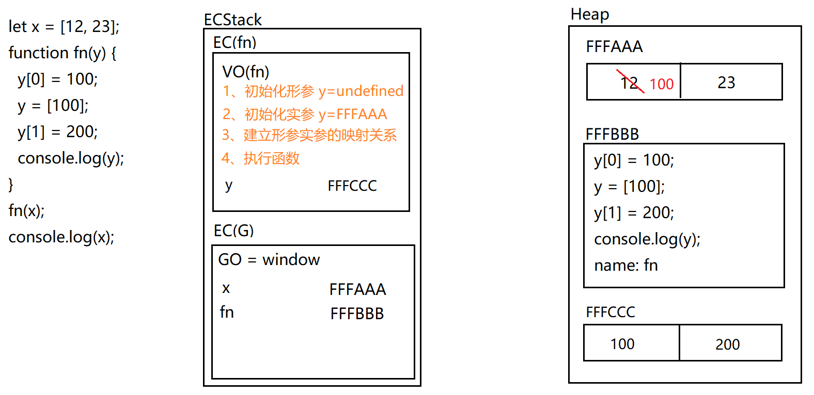
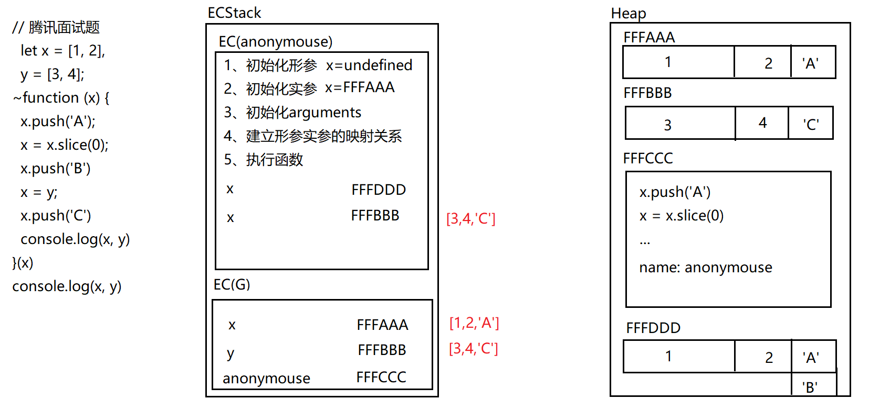

基础
数据类型
基本数据类型
js有五种 基本数据类型： Undefined、Null、Boolean、Number、String
es6新增了一种 基本数据类型：Symbol
es11新增了一种 基本数据类型：bigInt
Number
1 2 3 4 5 6 7 8 NaN 是number的特殊类型NaN => not a number => 不是一个数字console .log (typeof NaN )* NaN 和任何数都不相等包括它本身 console .log (NaN == NaN )console .log (NaN == undefined )console .log (NaN == null )
bigInt
1 2 3 4 5 6 7 8 9 10 11 12 13 14 15 16 bigInt表示一个任意精度的整数，可以表示超长数据，可以超出2 的53 次方。 Js 中 Number 类型只能安全的表示-(2 ^53 -1 )至 2 ^53 -1 范的值console .log (2 **53 )console .log (Number .MAX_SAFE_INTEGER ) - 使用 BigInt 有两种方式 方式一: 数字后面增加n const bigInt = 9007199254740993n console .log (bigInt)console .log (typeof bigInt) console .log (1n == 1 ) console .log (1n === 1 ) 方式二: 使用 BigInt 函数 const bigIntNum = BigInt (9007199254740993 )console .log (bigIntNum)
undefined
1 2 3 4 5 6 7 8 9 10 11 12 13 14 15 16 出现undefined 的情况 - 已声明但未被初始化的变量默认赋值undefined let a; console .log (a)- 未被声明的变量使用typeof 操作符检测数据类型时返回undefined console .log (typeof a)- 当函数没有明确指定返回值时，默认返回undefined function fn (console .log (111 )}; console .log (fn ())- 调用函数时，应该提供的参数没有提供，该参数等于undefined 。 function fn (x ){console .log (x)}; console .log (fn ())- 对象没有赋值的属性，该属性的值为undefined var obj = {}; obj.sex * undefined 和null 相等 除了这种情况以外 剩下的null /undefined 和其它任何数据类型都不相等 除了它本身 console .log (undefined == null )比较数据类型 两边类型不一致 console .log (null === undefined )
null
1 2 3 4 5 6 7 8 9 10 11 12 13 14 15 16 17 18 null 是js的关键字,表示空值null 是Object 的一个特殊值,本质上是一个空的对象console .log (typeof null ); 产生null 的情况 1 、访问不存在的dom元素console .log (document .getElementById ('app' ))2 、Object 的原型链终点console .log (Object .prototype __proto__ )- 小知识: 为什么是typoef null 为object？ 原理是这样的: 不同的对象在底层都表示为二进制,在 JavaScript 中二进制前三位都为 0 的话会被判断为 object 类型, null 的二进制表示是全0 ,自然前三位也是0 ,所以执行 typeof 时会返回"object" 。 所以这是早期JS 实现中的一个错误, 其实从ES5 制定开始就有动议将typeof null 改为返回"null" ,只是因为要保持语言的兼容性而维持至今。 - null 应用场景 当需要释放一个对象的时候可以将该对象赋值为null ，进而来释放对象 堆内存没有被外界引用的时候 就会被释放 let obj = {name : 'zs' }; obj = null
如何判断变量是否为null？
1 2 3 4 5 6 7 8 9 10 11 12 1 、var exp = null ;if (!exp && typeof exp != "undefined" && exp != 0 ){ alert ("is null" ); } 其中 typeof exp != "undefined" 排除了 undefined exp != 0 排除了数字零 !exp 排除了 false 2 、var exp = null ;if (exp === null ){ alert ("is null" ); }
面试题
如何检测一个对象是空对象？
1 2 3 4 5 6 7 8 9 10 11 12 13 14 15 16 17 - 1 、使用JSON .stringify ()将对象转换为json字符串； JSON .stringify (obj) === '{}' - 2 、使用for ...in 循环遍历对象除Symbol 以外的所有可枚举属性, 当对象有属性存在返回false ， 否则返回true 。 const obj = {}function isObjectEmpty (obj ){for (var key in obj){ return false } return true } console .log (isObjectEmpty (obj))- 3 、Object .getOwnPropertyNames () 方法会返回该对象所有可枚举和不可枚举属性的属性名（不含Symbol 属性）组成的数组。然后再通过判断返回的数组长度是否为零，如果为零的话就是空对象。 Object .getOwnPropertyNames (obj).length === 0 - 4 、Object .keys () 是 ES5 新增的一个对象方法，该方法返回一个数组，包含指定对象自有的可枚举属性（不含继承的和Symbol 属性）。用此方法只需要判断返回的数组长度是否为零，如果为零的话就是空对象。
null和undefined的区别？
1 2 3 4 5 6 7 8 9 10 11 12 13 14 15 16 17 18 19 相同点 1. 都只有一个值2. 都没有方法，准确的说都不能调用方法3. 都表示"无" 不同点 1. null 是一个关键字，undefined 不是关键字。var null = 2 ; var undefined = 2 ; 2. null 本质上是一个空的对象; undefined 是window 的一个属性。null 表示"没有对象" ,即此处不应该有值。 - 作为函数的参数，表示该函数的参数不是对象。 - 作为对象原型链的终点。 Object .getPrototypeOf (Object .prototype __proto__ ) undefined 表示"缺少值" ,即此处应该有一个值，但是还没有定义。 - 变量被声明了，但没有赋值时，就等于undefined 。 var a; a 其余情况查看上面undefined 章节
Boolean
bool 是表示 true 或 false 的基础数据类型。
bool 与 Boolean 区别
String
字符串类型，说明：字符串，用一对单引号（’ '）或双引号（“ ”）及引号内的字符构成，引号中间的部分可以任意多个，也可以是没有字符的空字符串。字符串中如果字符包含了双引号，则其外部应该由单引号标示，反之相同（外单内双，外双内单）
Symbol
ES6 引入了一种新的基本数据类型 Symbol ，表示独一无二的值。具体看ES6章节…
引用数据类型
引用数据类型（复杂数据类型）指的是 Object类型，所有其他的如 Array、Date、Math、RegExp等数据类型都可以理解为Object类型的子类。
其中Function比较特殊，它既是函数，也是对象。
1 2 3 4 5 6 7 var fn = new Function ('x' , 'y' , 'return x + y' )console .log (fn (1 , 2 ))function fn (console .dir (fn)
关于其它引用数据类型后续再单独展开讲
基本数据类型和引用数据类型的区别？
两种类型的区别是：存储位置不同 。基本（原始）数据类型直接存储在栈（stack）中的简单数据段，占据空间小、大小固定 ，属于被频繁使用数据，所以放入栈中存储。引用数据类型存储在堆（heap）中的对象，占据空间大、大小不固定 。如果存储在栈中，将会影响程序运行的性能；引用数据类型在栈中存储了指针，该指针指向堆中该实体的起始地址。当解释器寻找引用值时，会首先检索其在栈中的地址，取得地址后从堆中获得实体。
数据类型转换
概念：把一种数据类型的变量转换为另外一种数据类型。
数字类型转换（调用Number()，parseInt()，parseFloat()方法））
字符串类型转换（调用.toString()或String()方法）
布尔类型转换（调用Boolean()方法）
Number()
将参数对象的值转为数值
遇到非数字字符则返回NaN
遇到第二个小数点返回NaN
1 2 3 4 5 6 7 8 9 10 11 12 13 14 15 16 17 18 19 20 21 22 console .log (Number (1 ))console .log (Number (1.2 ))console .log (Number ('1' ))console .log (Number ('1.2' ))console .log (Number ('1.2.3' ))console .log (Number ('1x' ))console .log (Number ('x1' ))console .log (Number (undefined ))console .log (Number (NaN ))* 特殊情况 console .log (Number (true ))console .log (Number (false ))console .log (Number (null ))console .log (Number ('' ))** 特殊情况: 转换对象时先调用对象的toString方法 console .log (Number ([]))console .log (Number ([1 ]))console .log (Number ([1 , 2 ]))console .log (Number ({}))console .log (Number ({name : 'zs' }))
isNaN()
判断是否是一个"非数字"
在判断之前 底层调用Number()方法对数据进行转换
然后再对返回的结果进行 => 是否是一个 “非数字”
1 2 3 4 5 6 7 8 9 10 11 12 13 14 15 16 17 18 19 20 21 22 console .log (isNaN (1 ))console .log (isNaN (1.2 ))console .log (isNaN ('1' ))console .log (isNaN ('1.2' ))console .log (isNaN ('1.2.3' ))console .log (isNaN ('1x' ))console .log (isNaN ('x1' ))特殊 console .log (isNaN (true ))console .log (isNaN (false ))console .log (isNaN (undefined ))console .log (isNaN (NaN ))console .log (isNaN (null ))console .log (isNaN ([]))console .log (isNaN ('' ))特特殊 console .log (isNaN ([1 ]))console .log (isNaN ([1 , 2 ]))console .log (isNaN ({}))console .log (isNaN ({name : 'zs' }))
parseInt()
解析一个字符串并返回指定基数的十进制整数，它没有Number严格
1、如果第一个字符是数字会开始解析 直到遇到非数字才会停止解析
2、如果第一个数字是非数字字符 直接返回NaN
1 2 3 4 5 一般都是用来取整 console .log (parseInt (1.2 ))console .log (parseInt ('1.2.3' ))console .log (parseInt ('1x' ))console .log (parseInt ('x1' ))
parseFloat()
可以把任意类型转成浮点数
parseFloat会解析第一个小数点 遇到第二个小数点 或者是非数字停止解析
parseFloat如果第一个是非数字 则返回NaN
如果解析的内容中只有整数 解析成整数
1 2 3 console .log (parseFloat ('1.23' ))console .log (parseFloat ('1.2.3' ))console .log (parseFloat ('1' ))
小练习
1 2 3 4 5 6 7 8 9 10 let result = parseFloat ('top:10px' )if (result == 200 ){ console .log (200 ) }else if (result == NaN ){ console .log ('NaN' ) }else if (typeof result == 'number' ){ console .log ('number' ) }else { console .log ('other' ) }
1 2 let result = parseFloat ('1.6px' ) + parseInt ('1.2px' ) + typeof parseInt (null )console .log (result)
toString() && String()
把指定参数对象转成字符串
注意：null，undefined不能调用toString()
情况一 ：对象.toString() => Object.prototype.toString() => 并不是用来转成字符串的 => 而是用来检测数据类型的 => [object 所属类信息]
1 2 3 4 5 6 7 8 注: 在控制台发现{}会被当作一个代码块而不是一个对象 console .log ({} + 0 )console .log (({}) + 0 )console .log (({} + 0 ))console .log (0 + {})console .log (0 + [])console .log (0 + [1 ])console .log (0 + [1 , 2 ])
情况二 ：数组.toString() => 数组也是对象，所以应该调用Object.prototype.toString()
但是因为数组对toString()方法进行了重写自身原型上有toString()方法
所以根据原型链的查找规则，先用自身的 => Array.prototype.toString() => 转字符串
如果数组需要使用Object的toString()来检测其数据类型 可以使用call方法
这种检测数据类型的方式 也是开发中用的最多的
1 Object.prototype.toString.call([]) => [object Array]
情况三 ：除了对象和数组以外，其它数据类型.toString()都是直接加上""
1 2 3 4 5 6 console .log ((1 ).toString ())console .log ((false ).toString ())console .log (null .toString ())console .log (undefined .toString ())console .log (String (null ))console .log (String (undefined ))
注：对象转数字 需要先调用toString() 转成字符串 再去转数字
1 2 console .log ([66 ] == 66 )console .log ([66 ] === 66 )
小练习
1 2 let result = isNaN (!!Number (parseInt ("0.1" )))console .log (result)
1 2 let result = typeof !parseInt (null ) + !isNaN (null )console .log (result)
1 2 let result = 10 + false + undefined + [] + 'Tencent' + null + true + {}console .log (result)
1 2 let result = 10 + false + undefined + [] + +'Tencent' + null + true + {}console .log (result)
Boolean
除了undefined、null、0、‘’、NaN转为false以外，其它的都为true
将一个数据转成boolean类型的两种方式: Boolean(数据) 或者 !!数据
隐式类型转换
转换为String
算法运算符（+）， 任何值和字符串做 + 时，都会先转换为字符串，然后再和字符串做拼串操作；多个值 + 时 ，从左向右运算，注意数值类型；
可以利用这一特点，来将任意数据类型转换为String，只需（任意字符串 + “”）即可转换为String；这是一种隐式类型转换，由浏览器自动完成，实际上也是调用了String()函数；
转换为Number
算法运算符（- * / %），任何值做 - * /，都会将其转换为Number，再做运算；可以利用这一特点，来将任意数据类型转换为Number，只需（任意字符串 - 0）（任意字符串 * 1）（任意字符串 / 1）即可转换为Number，这是一种隐式类型转换，由浏览器自动完成，实际上也是调用了Number()函数；
一元运算符（+(正号) ），对于非Number类型的值，它会先转换为Number，然后再运算；可以对一个其他数据类型使用+，来将其转换为number，隐式类型转换，它的原理和Number()函数一样；
转换为Boolean
逻辑计算符（!非），! 对一个布尔值做取反运算；如果对非布尔值取反，则会将其转换为布尔值，再取反；可以利用其特点，将其他数据类型取两次反，转换为布尔值；原理和Boolean()一样；
字符串和数字
字符串加数字，数字就会转成字符串。
数字减字符串，字符串转成数字。
如果字符串不是纯数字就会转成NaN。字符串减数字也一样。两个字符串相减也先转成数字。
乘，除，大于，小于跟减的转换也是一样。
1 2 3 4 5 6 7 8 9 console .log (1 +'2' )console .log (1 -'2' )console .log (10 -'kkb' ) console .log (10 -'10a' )console .log (10 *'20' ) console .log ('10' *'20' ) console .log (2 /'1' ) console .log ('2' /'1' ) console .log ('2' /'kkb' )
== 隐式转换规则
【类型一致】
{} == {}: false => 比较的是堆内存中的地址值
[] == []: false => 比较的是堆内存中的地址值
NaN == NaN: false => NaN和任何数据类型都不相等包括它本身
undefined == undefined: true
null == null: true
【类型不一致】
1、null == undefined: true, 如果换成 === 结果就是false (因为类型不一致)
剩下的null/undefined和其它任何数据类型都不相等 除了它本身
2、字符串 == 对象 要将对象转成字符串
3、剩下的情况：如果 == 两遍类型不一致 都需要转成数字进行比较
1 2 3 4 5 6 7 console .log ('0' == 0 )console .log (0 == false )console .log ('0' == false )console .log (null == false )console .log (undefined == false )console .log ([] == false )console .log (![] == false )
注：在循环或者条件判断中，条件处理的结果就是布尔类型值
1 2 let flag = 0 if (flag){console .log (111 )}
数据类型检测
typeof
1 2 3 4 5 6 7 8 9 10 11 12 13 14 15 16 17 18 19 20 21 作用：typeof 校验数据类型 返回一个字符串 基本数据类型 console .log (typeof 1 ) console .log (typeof NaN ) console .log (typeof '1' ) console .log (typeof true ) console .log (typeof undefined )console .log (typeof null ) console .log (typeof 123n ) console .log (typeof Symbol (1 )) 引用数据类型 console .log (typeof []) console .log (typeof {}) console .log (typeof /[a-z]/) console .log (typeof new Date ()) 特殊 function fn (console .log (typeof fn) [总结] typeof 的返回类型为字符串，值有：number、boolean、string、object、function 、undefined 、symbol、bigint[局限性]:typeof 判断引用数据类型时 除了判断函数会输出"function" 其它都是输出"object" 所以一般只用来判断基本数据类型 判断引用数据类型的结果只作参考
instanceof
1 2 3 4 5 6 7 8 9 10 11 12 13 14 15 16 17 18 19 20 21 22 23 24 25 26 27 28 29 30 31 32 33 34 35 36 37 38 39 40 41 42 作用: 用于检测构造函数中的原型(prototype)属性是否出现在某个实例对象的原型链上 【局限性】 1 、原型的指向可以任意更改 所以这种方式的返回结果不一定准确 实际开发中也可以参考2 、无法检测基本数据类型 因为基本数据连对象都不是 所以不存在__proto__ 也没有原型链 - 如果非要检测 就将基本数据类型包装下 console .log ([] instanceof Array )console .log ({} instanceof Array )console .log ({} instanceof Object ) console .log ([] instanceof Object ) [局限性1 ] var obj = {name : 'zs' }console .log (obj.__proto__ )console .log (obj instanceof Object ) console .log (obj instanceof Array ) obj.__proto__ = Array .prototype console .log (obj.__proto__ )console .log (obj instanceof Array )[局限性2 ] console .log (1 instanceof Object ) console .log (1 instanceof Number )包装 console .log (new Number (1 ) instanceof Object )console .log (new Number (1 ) instanceof Number )console .log (new Number (1 ) instanceof String )[注意] instanceof 用来判断对象，代码形式为 【obj1 instanceof obj2】（obj2 必须为对象，否则会报错！）instanceof 只能用来判断两个对象是否属于实例关系， 而不能判断一个对象实例具体属于哪种类型console .log (9 instanceof Number ); console .log (true instanceof Boolean ); console .log ('libo' instanceof String ); console .log ([] instanceof Array ); console .log (function (instanceof Function ); console .log ({} instanceof Object ); console .log (typeof null ); console .log (null instanceof Object ); console .log (typeof NaN ); console .log (NaN instanceof Number );
constructor
1 2 3 4 5 6 7 8 9 作用: 用于检测实例对象是否是由某个构造函数实例化出来的 【局限性】 1 、构造器的指向可以任意更改 所以这种方式的返回结果不一定准确 实际开发中也可以参考var obj = new Object ()console .log (obj.__proto__ .constructor == Object ) console .log (obj.__proto__ .constructor == Array )修改构造器的指向 obj.__proto__ .constructor = null console .log (obj.__proto__ .constructor == Object )
Object.prototype.toString.call()
1 2 3 4 5 6 7 8 9 10 11 12 13 14 15 16 17 18 19 20 21 22 23 24 25 26 var arr = [1 , 2 , 3 ]Array .prototype toString = function ( return arr.join (',' ) } console .log (arr.toString ())
栈： 是一种连续储存的数据结构，具有先进后出 、后进先出 的性质。
堆： 是一种非连续的树形储存的数据结构，具有队列优先 ，先进先出 的性质。
优点：
动态分配内存大小，" 按需分配 "
缺点：
由于要在运行时才动态分配内存，相比于栈内存，它的存取速度较慢。

GO：全局对象（Global Object）
ECStack：执行环境栈（Excution Context Stack）
EC：执行环境（Excution Context）又称：执行上下文
VO：Varibale Object 变量对象
AO：Active Object 活动对象
Scope：作用域，创建函数时就确定的
ScopeChain：作用域链
1 2 3 4 5 6 7 8 9 10 11 12 13 14 15 let a = 12 ;let b = a;b = 13 ; console .log (a); let a = { n : 12 };let b = a;b['n' ] = 13 ; console .log (a.n );let a = { n : 12 };let b = a;b = { n : 13 }; console .log (a.n );

1 2 3 4 5 6 7 8 9 10 let x = 1 function A (y ) { let x = 2 function B (z ) { console .log (x + y + z) } return B } let c = A (2 )c (3 )

1 2 3 4 5 6 7 8 9 10 let a = { n : 10 }; let b = a;a.m = a = { n : 20 }; console .log (a.m );console .log (b);

1 2 3 4 5 6 7 8 9 10 let x = [12 , 23 ];function fn (y ) { y[0 ] = 100 ; y = [100 ]; y[1 ] = 200 ; console .log (y); } fn (x);console .log (x);

1 2 3 4 5 6 7 8 var x = 10 ~function (x ) { console .log (x); x = x || 20 && 30 || 40 console .log (x) }() console .log (x)
1 2 3 4 5 6 7 8 9 10 11 12 let x = [1 , 2 ], y = [3 , 4 ]; ~function (x ) { x.push ('A' ); x = x.slice (0 ); x.push ('B' ) x = y; x.push ('C' ) console .log (x, y) }(x) console .log (x, y)

1 2 3 4 5 6 7 8 9 10 11 12 13 14 let a = {}, b = '0' , c = 0 ; a[b] = 'JavaScript' ; a[c] = 'HTML+CSS' ; console .log (a[b]);==================== let a = {},b = { n : '1' }, c = { m : '2' } a[b] = 'JavaScript' ; a[c] = 'HTML+CSS' ; console .log (a[c]); console .log (a[b]);
拓展
1 2 3 4 5 6 7 8 9 10 11 12 13 14 15 16 17 "use strict" function fn (x, y ) { console .log (x, y, arguments ) arguments [0 ] = 666 console .log (x, y) } fn (100 , 200 )
操作符
运算符 operator
5 + 6
表达式 组成 操作数和操作符，会有一个结果
算术运算符
一元运算符
一元运算符：只有一个操作数的运算符
前置++
1 2 3 4 5 var num1 = 5 ;++ num1; var num2 = 6 ;console .log (num1 + ++ num2);
后置++
1 2 3 4 var num1 = 5 ;num1 ++; var num2 = 6 console .log (num1 + num2 ++);
猜猜看
1 2 3 4 5 6 var a = 1 ; var b = ++a + ++a; console .log (b); var a = 1 ; var b = a++ + ++a; console .log (b); var a = 1 ; var b = a++ + a++; console .log (b); var a = 1 ; var b = ++a + a++; console .log (b); var a = 4 ; var b = (a++)+(++a)+(a*10 ); console .log (a,b);var a = 10 ;var b= 10 ; var c= 10 ;a = b++;c = --a;b = ++a;a = c-- ;console .log (a,b,c);
前置++：先加1，后参与运算
逻辑运算符(布尔运算符)
&& 与 两个操作数同时为true，结果为true，否则都是false
|| 或 两个操作数有一个为true，结果为true，否则为false
! 非 取反
关系运算符(比较运算符)
< > >= <= == != === !==
1 2 3 4 ==与===的区别：==只进行值得比较，===类型和值同时相等，则相等 var result = '55' == 55 ; var result = '55' === 55 ; var result = 55 === 55 ;
赋值运算符
= += -= *= /= %=
1 2 3 例如： var num = 0 ;num += 5 ;
运算符的优先级
优先级从高到底
1. () 优先级最高
2. 一元运算符 ++ -- !
3. 算数运算符 先* / % 后 + -
4. 关系运算符 > >= < <=
5. 相等运算符 == != === !==
6. 逻辑运算符 先&& 后||
7. 赋值运算符 =
1 2 3 4 5 4 >= 6 || '人' != '阿凡达' && !(12 * 2 == 144 ) && true var num = 10 ;5 == num / 2 && (2 + 2 * num).toString () === '22'
作用域
1 2 3 4 5 6 7 8 9 10 11 12 13 14 15 16 17 18 19 20 21 22 23 24 25 26 27 28 29 30 31 32 33 34 35 36 37 38 39 40 41 42 43 44 45 46 47 48 49 50 51 52 53 54 55 56 57 58 59 60 61 62 63 64 65 66 67 68 69 70 71 72 73 74 75 76 77 78 79 80 81 82 83 84 85 86 87 88 89 90 91 92 93 94 95 96 97 98 99 100 101 102 103 104 105 106 107 108 109 110 111 112 113 114 115 116 117 118 119 120 121 122 123 124 125 126 127 128 129 130 131 132 133 134 135 136 137 138 139 140 141 142 143 144 145 146 147 148 149 150 151 152 153 154 155 156 157 158 159 160 161 162 163 164 165 166 167 168 169 170 171 172 173 174 175 var a = 3 ;function f1 ( var a = 30 ; function f2 ( a = 300 ; } f2 (); console .log (a); } f1 ();console .log (a);
函数
1 2 3 4 5 6 7 8 9 10 11 12 13 14 15 16 17 18 19 20 21 22 23 24 25 26 27 28 29 function fn (x, y ){} console .dir (fn)
柯里化
递归
闭包
预解析
1 2 3 4 5 6 7 8 9 10 11 12 13 14 15 16 17 18 19 20 21 22 23 24 25 26 27 28 29 30 31 32 33 34 35 36 37 38 39 40 41 42 43 44 45 46 47 48 49 50 51 52 53 54 55 56 57 58 59 60 61 62 63 64 65 66 67 68 69 70 71 72 73 74 75 76 77 78 79 80 81 82 83 84 85 86 87 88 89 90 91 92 93 94 95 96 97 98 99 100 101 102 103 104 105 106 107 108 109 110 111 112 113 114 115 116 117 118 119 120 121 122 123 124 125 126 127 128 129 130 131 132 133 134 135 136 137 138 139 140 141 142 143 144 145 146 147 148 149 150 151 152 153 154 155 156 157 158 159 160 161 162 163 164 165 166 167 168 169 170 171 172 173 174 175 176 177 178 179 180 181 182 183 184 185 186 187 188 189 190 191 192 193 194 195 196 197 198 199 200 201 202 203 204 205 206 207 208 209 210 211 212 213 214 215 216 217 218 219 220 221 222 223 224 225 226 227 228 229 230 231 232 233 234 235 236 237 238 239 240 241 242 243 244 245 246 247 248 249 250 251 252 253 254 255 256 257 258 259 260 261 262 263 264 265 266 267 268 269 270 271 272 273 274 275 276 277 278 279 280 281 282 283 284 285 286 287 288 289 290 291 292 293 294 295 296 297 298 299 300 301 302 303 304 305 306 307 308 309 310 311 312 313 314 315 316 317 318 f1 ()console .log (c);console .log (b);console .log (a);function f1 ( var a = b = c = 9 ; console .log (a); console .log (b); console .log (c); }
练习
1、"abcoefoxyozzopp"查找字符串中所有o出现的位置
1 2 3 4 5 6 7 8 9 var s = 'abcoefoxyozzopp' ;var array = [];do { var index = s.indexOf ('o' , index + 1 ); if (index != -1 ) { array.push (index); } } while (index > -1 ); console .log (array);
2、把字符串中所有的o替换成!
1 2 3 4 5 6 7 var s = 'abcoefoxyozzopp' ;do { s = s.replace ('o' , '!' ); } while (s.indexOf ('o' ) > -1 ); console .log (s);console .log (s.replace (/o/ig , '' ));
3、判断一个字符串中出现次数最多的字符，统计这个次数
1 2 3 4 5 6 7 8 9 10 11 12 13 14 15 16 17 18 19 20 21 22 var s = 'abcoefoxyozzopp' ;var o = {};for (var i = 0 ; i < s.length ; i++) { var item = s.charAt (i); if (o[item]) { o[item] ++; }else { o[item] = 1 ; } } var max = 0 ;var char ;for (var key in o) { if (max < o[key]) { max = o[key]; char = key; } } console .log (max);console .log (char);
4、声明：var str= “http://localhost/mylive.php?id=99&key=双11特惠&age=20 ”;
5、写一段程序,实现将字符串反转。
6、将get-element-by-id 转成 getElementById
this指向
函数的上下文 (this关键字) 由调用函数的方式决定
函数如果不调用 就不能确定函数的上下文
规则1: 对象打点调用它的方法函数 则函数上下文是这个打点的对象
1 2 3 4 5 6 7 8 9 var obj = { a : 10 , b : 20 , fn : function ( console .log (this ) console .log (this .a + this .b ) } } obj.fn ()
函数的this指向不是由定义在哪决定的 而是由谁调用决定的
1 2 3 4 5 6 7 8 9 10 11 12 13 14 15 16 17 18 19 20 21 22 23 24 25 26 27 28 29 30 31 32 33 34 35 36 37 38 39 40 41 42 43 44 45 46 47 48 var obj1 = { a : 1 , b : 2 , fn ( console .log (this ) console .log (this .a + this .b ) } } var obj2 = { a : 3 , b : 4 , fn : obj1.fn } obj2.fn () ============= function fn ( var a = 1 , b = 2 return { a : 3 , b : 4 , foo ( console .log (this .a + this .b ) } } } fn ().foo ()============= function fn ( console .log (this .a + this .b ) } var obj = { a : 1 , b : 2 , c : [ { a : 3 , b : 4 , c : fn } ] } var a = 5 obj.c [0 ].c ()
规则2: 圆括号直接调用函数 则函数的上下文是window对象
通过var声明的变量会挂载到window上
开启严格模式 => this => undefined
1 2 3 4 5 6 7 8 9 10 11 12 13 14 15 16 17 18 19 20 21 22 23 24 "use strict" var a = 10 var b = 20 function fn ( console .log (this ) console .log (this .a + this .b ) } fn ()============= function fn ( console .log (this ) return this .a + this .b } var a = 1 var b = 2 var obj = { a : 3 , b : fn (), c : fn } var res = obj.c ()console .log (res)
规则3: 数组 (类数组对象)遍历出函数进行调用 this指向就是该数组 (类数组对象)
数组【下标】
1 2 3 4 5 6 7 function fn ( console .log (arguments [3 ]()) } fn ('A' , 'B' , 'C' , function ( console .log (this ) console .log (this [0 ]) })
规则4: IIFE函数(自执行函数) this指向是window对象
1 2 3 4 5 6 7 8 9 10 11 12 13 14 15 16 (function ( console .log (this ) })() ============ var a = 1 var obj = { a : 2 , fun : (function ( var a = this .a return function ( console .log (a + this .a ) } })() } obj.fun ()
规则5: 定时器调用函数 this指向是window
1 2 3 4 5 6 7 8 9 10 11 12 13 14 15 16 17 18 19 20 21 22 23 24 25 26 27 28 29 30 31 var timeId = setTimeout (function ( console .log (this ) }, 1000 ) clearTimeout (timeId)============== var obj = { a : 1 , b : 2 , fun : function ( console .log (this .a + this .b ) } } var a = 3 var b = 4 setTimeout (obj.fun , 2000 )============== var obj = { a : 1 , b : 2 , fun : function ( console .log (this .a + this .b ) } } var a = 3 var b = 4 setTimeout (function ( console .log (this ) obj.fun () }, 2000 )
规则6: 事件处理函数的this指向是绑定事件的dom元素
1 2 dom元素.事件 = 事件处理函数 实现效果: 三个div, 点击哪个哪个变红, 要求使用同一个事件处理函数实现
规则7: 类(构造函数)里面的this指向通过该类(构造函数)创建的实例
1 2 3 4 5 6 7 8 9 10 11 function Person (name ){ this .name = name } let p = new Person ('zs' )class Person { constructor (name ){ this .name = name } } let p = new Person ('zs' )
规则8：箭头函数
1 2 3 4 5 6 7 8 9 10 11 12 13 14 15 16 17 18 19 20 21 22 23 24 25 26 27 28 var name = 'lisi' var obj = { name : 'zs' , fn : () => { console .log (this ) console .log (this .name ) } } obj.fn () var name = 'lisi' var obj = { name : 'zs' , fn : function ( console .log (this ) const add = ( console .log (this .name ) } add () } } obj.fn () var foo = obj.fn foo ()
源码分析
new
1 2 3 4 5 6 7 8 9 10 11 12 13 14 15 16 17 18 19 20 21 22 23 24 25 26 27 28 29 30 31 function Person (name, age ) { this .name = name this .age = age } Person .prototype sayHi = function (console .log ('hi' )}function mockNew ( let obj = {} let constructor = Array .prototype shift .call (arguments ) obj.__proto__ = constructor.prototype let res = constructor.apply (obj, arguments ) return res instanceof Object ? res : obj } let p = mockNew (Person , 'zs' , 18 )console .log (p.name )p.sayHi ()
call
1 2 3 4 5 6 7 8 9 10 11 12 13 14 15 16 17 18 19 20 21 22 23 24 25 26 27 28 29 30 31 32 33 34 35 36 37 38 39 40 41 42 43 44 45 46 47 48 49 50 51 52 53 54 55 56 57 58 function fn1 ( console .log (this , arguments ) } function fn2 ( console .log (this , arguments ) } Function .prototype call = function (context ) { context = context ? Object (context) : window context.fn = this let arr = [] arguments = Array .from (arguments ).slice (1 ) for (let i = 0 ; i < arguments .length ; i++) { arr.push ('arguments[' + i + ']' ) } let res = eval ('context.fn(' + arr + ')' ) delete context.fn return res } let obj = { 0 : 111 , 1 : 222 , 2 : 333 , length : 3 }
apply
1 2 3 4 5 6 7 8 9 10 11 12 13 14 15 16 17 18 19 20 21 22 23 24 25 26 27 28 29 30 function fn1 ( console .log (this , arguments ) } function fn2 ( console .log (this , arguments ) } Function .prototype apply = function (context, args ) { context = context ? Object (context) : window context.fn = this if (!args) { context.fn () } let res = eval ('context.fn(' + args + ')' ) delete context.fn return res } fn1.apply (1 , [1 , 2 ]) let max = Math .max .apply (null , [1 , 345 , 212 , 23 , 234 , 34 ])console .log (max)
bind
1 2 3 4 5 6 7 8 9 10 11 12 13 14 15 16 17 18 19 20 21 22 23 24 25 26 27 28 29 30 31 32 33 34 35 36 37 38 39 40 41 42 43 44 45 46 47 48 49 50 51 52 53 54 let obj = { name : 'zs' }function fn1 ( this .xx = 'xxx' console .log (this , arguments ) } function fn2 ( console .log (this , arguments ) } Function .prototype bind = function (context ) { context = context ? Object (context) : window let that = this let bindArgs = Array .from (arguments ).slice (1 ) function FBound ( return that.apply (this instanceof FBound ? this : context, bindArgs.concat (...arguments )) } function Fn ( Fn .prototype this .prototype FBound .prototype new Fn () return FBound } fn1.prototype age = 18 let fn = fn1.bind (obj, 1 , 2 )let res = new fn ()console .log (res.age )var obj = { name : 'zs' , fn : function ( console .log (this ) setTimeout (function ( console .log (this .name ) }.bind (obj), 2000 ) } } obj.fn ()
对象 1 2 3 4 5 6 7 8 9 用js描述生活中的汽车 var name = '布加迪' var price = 999 var color = 'black' 如果使用基本数据类型描述对象 它所创建的变量都是独立 不能成为一个整体 所以考虑用对象来描述 对象是一种复合数据类型 在对象里面可以保存多个不同数据类型属性 在对象中创建的变量都是从属于一个整体
对象的分类
1 2 3 4 5 6 7 8 1 、内建(内置)对象 - 由JS 标准中定义的对象 - 比如: Math 、Date 、String 、Function 、Object 、Array ... 2 、宿主对象 - 由JS 的运行环境提供的 (由浏览器提供的) - DOM 、BOM 、Console 3 、自定义对象 - 开发人员自己创建的对象
创建对象方式1
1 2 3 4 5 不成文的规定 首字母大写的函数是构造函数 => 用来配合new 关键字进行实例化对象的 => new Person () 首字母小写的函数是普通函数 => 用来调用的 => sayHi () 1 、通过new 关键字调用js提供的Object 函数(构造函数)function Object (
new 关键字做了哪些事
1 2 3 4 5 1 、在堆内存中申请一块空间 创建一个新对象{}2 、新对象的__proto__指向构造函数中的原型对象prototype3 、确认this 指向 让上下文中this 指向这个新对象4 、执行构造函数中的代码 初始化新对象5 、返回新对象 返回的是新对象的地址值 即便没有return 构造函数也会默认返回this
1 2 3 4 5 6 7 8 9 10 11 12 13 14 15 16 17 18 19 20 21 22 23 24 25 26 27 28 29 30 var car = new Object ()car.name = '布加迪' car.price = 999 car.color = 'blue' console .log (car.name )console .log (car.price )console .log (car.color )car.name = '劳斯莱斯' console .log (car.name )delete car.name console .log (car.name )car.run = function ( console .log ('run ~' ) } car.run () car.run = function ( console .log ('new run ~' ) } car.run () delete car.run console .log (car.run ) car.run ()
工厂函数
1 2 3 4 5 6 7 8 9 10 11 12 13 14 15 16 17 18 19 20 21 22 23 24 25 26 27 28 29 30 31 32 var car1 = new Object ()car1.name = '布加迪' car1.price = 999 car1.color = 'blue' var car2 = new Object ()car2.name = '布加迪' car2.price = 999 car2.color = 'blue' var car3 = new Object ()car3.name = '布加迪' car3.price = 999 car3.color = 'blue' function createCar (name, price, color ) { var car = new Object () car.name = name car.price = price car.color = color car.run = function ( console .log ("run ~" ) } return car } var c1 = createCar ('布加迪' , 999 , 'blue' )var c2 = createCar ('劳斯莱斯' , 888 , 'black' )var c3 = createCar ('宝马' , 777 , 'white' )
创建对象方式2
1 2 3 4 5 6 7 8 var obj = new Object ()console .log (typeof obj) console .log (obj instanceof Object ) console .log (Object .prototype toString (obj))
自定义构造函数的方式创建对象
1 2 3 4 5 6 7 8 9 10 11 12 13 14 15 16 17 18 19 20 21 function Person (name, age ){ this .name = name this .age = age, this .say = function ( console .log ('sayHi ~' ) } } var p1 = new Person ("zs" , 18 )console .log (p1.name )p1.say () var p2 = new Person ("ls" , 20 )console .log (p2.age )console .log (p1 instanceof Person ) function Animal (console .log (p1 instanceof Animal ) console .log (Object .prototype toString (p1))
创建对象方式3
1 2 3 4 5 6 7 8 9 10 11 12 字面量的方式: 创建出来的对象是一次性的 复用性差 如果要创建多个对象，代码冗余度太高 var obj = { name : 'zs' , age : 18 , fn : function ( console .log ('hello ~' ) } } console .log (obj.name )obj.name = 'ls' console .log (obj.name )obj.fn ()
遍历对象
1 2 3 4 5 6 7 8 9 10 11 12 13 14 15 16 17 18 19 20 21 var obj = { name : 'zs' , age : 18 , fn : function ( console .log ('hello ~' ) } } console .log (obj['age' ])for (var key in obj) { console .log (obj[key]) }
构造函数
1 2 3 4 5 6 7 8 9 10 11 12 13 14 15 16 17 18 19 20 21 22 23 24 25 26 function Person (var p = new Person ()console .dir (p) console .log (p.__proto__ .constructor == Person ) console .log (p.constructor == Person )
构造函数创建对象存在的问题
1 2 3 4 5 6 7 8 9 10 11 12 13 14 15 16 17 18 19 20 21 22 23 24 25 26 27 function fn ( console .log ('good good study, day day up' ) } var fn = 100 function Student (name, age, sex ){ this .name = name this .age = age this .sex = sex this .study = fn } var stu1 = new Student ('zs' , 18 , 'man' )stu1.study () var stu2 = new Student ('ls' , 16 , 'woman' )stu2.study () console .log (stu1.study == stu2.study )
原型
1 2 3 4 5 6 7 8 9 10 11 12 13 14 15 16 17 18 19 20 21 22 23 24 25 26 27 28 29 30 31 32 33 34 35 36 37 38 39 40 41 42 43 44 45 46 47 48 49 50 51 52 53 54 55 56 57 58 59 60 61 62 63 64 65 66 67 68 69 function Student (name, age ){ this .name = name this .age = age this .say = function ( console .log ('听大家说高考数学卷很难 昨晚试了一下 两个小时后才发现试卷拿反了' ) } } Student .prototype score = 88 Student .prototype sayHi = function ( console .log ('哥们你这睡眠质量不行 我一般都8小时后才发现' ) } var stu = new Student ('zs' , 18 )console .log (stu.name )stu.say () console .log (stu.score )stu.sayHi () var stu2 = new Student ('ls' , 20 )console .log (stu.say == stu2.say ) console .log (stu.sayHi == stu2.sayHi ) console .log (stu2.__proto__ == Student .prototype
Array原型
1 2 3 4 5 6 7 8 9 10 11 12 13 14 15 16 17 18 19 20 21 22 23 24 25 26 27 28 29 30 31 32 Array .prototype getSum = function ( var sum = 0 for (var i = 0 ; i < this .length ; i++){ sum += this [i] } return sum } var arr = [1 , 2 , 3 , 4 , 5 ]var res = arr.getSum ()console .log (res)var arr2 = [23 ,432 ,35 ]console .log (arr2.getSum ())console .log (arr.getSum == arr2.getSum )
原型的简单写法
1 2 3 4 5 6 7 8 9 10 11 12 13 14 15 16 17 18 19 20 21 22 23 24 25 26 27 28 29 30 31 32 33 34 35 36 37 38 39 40 41 42 43 44 45 function Cat (name, age ){ this .name = name this .age = age this .zhua = function ( console .log ('猫抓老鼠狗吃肉 凹凸曼打小怪兽' ) } } Cat .prototype constructor : Cat , leg : 4 , color : 'yellow' , height : 30 , run : function ( console .log ('run run ~' ) }, eat : function ( this .run () console .log ('吃猫粮 ~' ) } } var c1 = new Cat ("布偶" , 2 )console .log (c1.name )c1.zhua () console .log (c1.leg )c1.eat () console .log (Cat .prototype console .log (c1.__proto__ )
原型的查找规则
1 2 3 4 5 6 7 8 9 10 11 12 13 14 15 16 17 18 19 20 21 22 23 24 25 26 27 28 29 30 31 32 33 34 35 36 37 38 39 40 41 42 function Dog (name, age ){ this .name = name this .age = age this .zhua = function ( console .log ('猫抓老鼠狗吃肉 凹凸曼打小怪兽' ) } } Dog .prototype sex = 'man' var dog = new Dog ('大金毛' , 5 )console .log (dog)console .log (dog.hasOwnProperty ('age' )) console .log (dog.hasOwnProperty ('weight' )) console .log (dog.hasOwnProperty ('sex' )) console .log ('name' in dog) console .log ('height' in dog) console .log ('sex' in dog) console .log (dog.hasOwnProperty ('hasOwnProperty' )) console .log ('hasOwnProperty' in dog) console .log (dog.aaa )
原型的终点
1 2 3 4 5 6 7 8 9 10 11 function Dog (name, age ){ this .name = name this .age = age this .zhua = function ( console .log ('猫抓老鼠狗吃肉 凹凸曼打小怪兽' ) } } console .log (Dog .prototype console .log (Dog .prototype __proto__ ) console .log (Dog .prototype __proto__ .__proto__ )
改变原型指向
1 2 3 4 5 6 7 8 9 10 11 12 13 14 15 16 17 18 19 20 21 22 23 24 25 26 27 28 29 30 31 32 33 34 35 36 37 38 39 40 41 42 43 44 45 46 47 48 49 function Animal (name, age, sex ) { this .name = name this .age = age this .sex = sex } Animal .prototype weight = 18 Animal .prototype sleep = function ( console .log ('睡觉咯 ~' ) } function ErHa (name, age ) { this .name = name this .age = age this .zhua = function ( console .log ('猫抓老鼠狗吃肉 凹凸曼打小怪兽' ) } } Object .setPrototypeOf (ErHa .prototype Animal .prototype var erha = new ErHa ('二哈' , 3 )console .log (erha.name )erha.zhua () console .log (erha.weight )
继承
Ajax
初体验
1 2 3 4 5 6 7 8 9 10 11 12 13 14 15 16 17 const xhr = new XMLHttpRequest ()xhr.open ('get' , 'https://api.it120.cc/fyy/shop/goods/list' , true ) xhr.send (null ) xhr.onload = function ( if (xhr.readyState == 4 && xhr.status == 200 ){ console .log (JSON .parse (xhr.responseText )) } }
ajax核心对象
1 2 3 4 5 6 7 8 9 10 11 12 13 14 15 16 17 18 19 20 21 22 23 <body> <!-- 如果是表单提交的方式 一定要加上name属性 --> <!-- 数据提交时会将name属性的值作为键 用户输入的数据作为值 --> <!-- 拼接成一个对象 放到请求体中提交给后端 --> <!-- <form action="/add" method="post"> 用户名: <input type="text" name="username"><br> 密码: <input type="text" name="password"><br> <button type="submit">登录</button> </form> --> <script> // 1、创建xhr核心对象 => 兼容写法 var xhr = null // 判断当前浏览器是否支持 XMLHttpRequest if (XMLHttpRequest) { // IE以外的浏览器使用 xhr = new XMLHttpRequest() } else { // IE浏览器使用 xhr = new ActiveXObject('Microsoft.XMLHttp') } </script> </body>
get请求方式
1 2 3 4 5 6 7 8 9 10 11 12 13 14 15 16 17 18 19 20 let userInfo = 'name=张三&age=22' var xhr = new XMLHttpRequest ()xhr.open ('get' , 'http://localhost:3000/addUser?' + encodeURI (userInfo), true ) xhr.send (null ) xhr.onload = function ( if (xhr.readyState == 4 && xhr.status == 200 ){ console .log (JSON .parse (xhr.responseText )) } }
作业
1 2 3 4 5 6 7 8 9 10 11 12 13 14 15 16 17 18 19 20 21 22 23 24 25 26 27 28 29 30 31 32 33 34 35 36 37 38 39 40 41 42 43 44 45 46 47 48 49 50 51 52 <body> <button id ="btn1" > 获取数据</button > <button id ="btn2" > 添加数据</button > <!-- 提示信息 --> <span id ="info" > </span > <!-- 准备一个容器 --> <ul id ="uu" > </ul > <script > var xhr; if (XMLHttpRequest ){ xhr = new XMLHttpRequest () }else { xhr = new ActiveXObject ('Microsoft.XMLHttp' ) } btn2.onclick = function ( var userInfo = 'name=李四&age=22' ; xhr.open ('get' , 'http://localhost:3000/addUser?' + encodeURI (userInfo), true ) xhr.send (null ) xhr.onload = function ( if (xhr.readyState == 4 && xhr.status == 200 ) { alert (xhr.responseText ) } } } </script > </body>
服务端
1 2 3 4 5 6 7 8 9 10 11 12 13 14 15 16 17 18 19 20 21 22 23 24 25 26 27 28 29 30 31 32 33 34 35 36 37 38 39 40 41 42 43 44 45 46 47 48 49 50 51 52 53 54 55 56 57 58 const express = require ('express' )const app = express ()const path = require ('path' )const cors = require ('cors' )app.use (cors ()) app.use (express.urlencoded ()) app.use (express.json ()) app.use (express.static (path.join (__dirname, 'public' ))) let userList = [ { name : 'zs' , age : 18 }, { name : 'ls' , age : 20 } ] app.get ('/getUserList' , (req, res ) => { res.send (JSON .stringify (userList)) }) app.get ('/addUser' , (req, res ) => { console .log (1111 ) res.send (req.query .name ) }) app.post ('/addUser' , (req, res )=> { console .log (a) res.send (req.body ) }) app.listen (3000 , () => { console .log ('server is running at port 3000 ~' ) })
post请求方式
1 2 3 4 5 6 7 8 9 10 11 12 13 14 15 16 17 18 19 20 21 22 23 24 25 26 27 28 29 30 31 32 33 34 35 36 <body> <button id ="btn1" > 发送表单数据</button > <button id ="btn2" > 发送Json数据</button > <script > var xhr = new XMLHttpRequest () btn1.onclick = function ( var userInfo = "name=李四&age=22" xhr.open ('post' , 'http://localhost:3000/addUser' , true ) xhr.setRequestHeader ('Content-Type' , 'application/x-www-form-urlencoded' ) xhr.send (userInfo) xhr.onload = function ( console .log (xhr.responseText ) } } btn2.onclick = function ( var userInfo = {name : '王五' , age : 24 } xhr.open ('post' , 'http://localhost:3000/addUser' , true ) xhr.setRequestHeader ('Content-Type' , 'application/json' ) xhr.send (JSON .stringify (userInfo)) xhr.onload = function ( console .log (xhr.responseText ) } } </script > </body>
作业
1 2 3 4 5 6 7 8 9 10 11 12 13 14 15 16 17 18 19 20 21 22 23 24 25 26 27 28 29 30 31 32 <body> <h5 id ="info" > </h5 > 用户名: <input type="text" id="username"><br> 密码: <input type="text" id="password"><br> <button id="btn1">登录</button> <script> btn1.onclick = function () { // 获取用户输入的用户名 var uname = username.value // 获取用户输入的密码 var pwd = password.value if (!uname || !pwd) { info.innerHTML = '输入框不能为空' // 停止后面代码执行 return } else { // 能够进到这里证明用户输入了用户名和密码 // 拿着用户输入的用户名和密码发起请求 var xhr = new XMLHttpRequest() var userInfo = `name=${uname}&pwd=${pwd}` xhr.open('get', 'http://localhost:3000/addUser?' + encodeURI(userInfo), true) xhr.send(null) xhr.onreadystatechange = function () { if (xhr.readyState == 4 && xhr.status == 200) { console.log(xhr.responseText) } } } } </script> </body>
onreadystatechange 1 2 3 4 5 6 7 8 9 10 11 12 13 14 15 16 17 18 19 20 21 22 23 24 25 26 27 28 29 30 31 32 33 34 35 36 37 38 39 <script> var xhr = new XMLHttpRequest () console .log (xhr.readyState ) var userInfo = `name=zs&pwd=123` xhr.open ('post' , 'http://localhost:3000/addUser?' + encodeURI (userInfo), true ) xhr.send (null ) console .log (xhr.readyState ) xhr.onreadystatechange = function ( console .log (xhr.readyState ) if (xhr.readyState == 4 && xhr.status == 200 ) { console .log (xhr.responseText ) } } </script>
onload
1 2 3 4 5 6 7 8 9 10 11 12 13 14 15 16 <script> var xhr=new XMLHttpRequest () let params = 'name=zs&age=18' xhr.open ('post' ,'http://localhost:3000/addUser' , true ) xhr.setRequestHeader ('Content-Type' , 'application/x-www-form-urlencoded' ) xhr.send (params) xhr.onload =function ( console .log (xhr.responseText ) } </script>
练习
登录页
1 2 3 4 5 6 7 8 9 10 11 12 13 14 15 16 17 18 19 20 21 22 23 24 25 26 27 28 29 30 31 32 33 34 35 36 37 38 39 40 41 42 43 44 <body> <h3 > 登陆页</h3 > <p id ="info" > </p > 用户名: <input type="text" name="username" id="username"><br> 密 码: <input type="text" name="password" id="password"><br> <button id="btn">登录</button> <script> btn.onclick = function () { // 获取用户输入的内容 var uname = username.value var pwd = password.value if (!uname) { info.innerHTML = '用户名不能为空' return } if (!pwd) { info.innerHTML = '密码不能为空' return } let params = `uname=${uname}&pwd=${pwd}` var xhr = new XMLHttpRequest() xhr.open('post', 'http://localhost:3000/login', true) xhr.setRequestHeader('Content-Type', 'application/x-www-form-urlencoded') xhr.send(params) xhr.onload = function () { var data = JSON.parse(xhr.responseText) if(data.code == 1){ info.innerHTML = data.msg }else { alert('登录成功 即将跳转到首页') // location.href = `./02-首页.html#name=${uname}` // file:///D:/Education/2108A/js/day13/code/02.html#name=zs location.href = `./02-首页.html` sessionStorage.setItem('userInfo', uname) } } xhr.onerror = function(){ console.log('网络错误 ~') } } </script> </body>
首页
1 2 3 4 5 6 7 8 9 10 11 12 13 14 15 16 17 18 19 20 21 <script> var uname = sessionStorage.getItem ('userInfo' ) var h3 = `<h3>欢迎你 ${uname} </h3>` document .body .innerHTML = h3 </script>
注册页
1 2 3 4 5 6 7 8 9 10 11 12 13 14 15 16 17 18 19 20 21 22 23 24 25 26 27 28 29 30 31 32 33 34 35 <body> <h3 > 注册页</h3 > <p id ="info" > </p > 用户名: <input type="text" name="username" id="username"><br> 密 码: <input type="text" name="password" id="password"><br> <button id="btn">注册</button> <script> btn.onclick = function () { // 获取用户输入的内容 var uname = username.value var pwd = password.value if (!uname) { info.innerHTML = '用户名不能为空' return } if (!pwd) { info.innerHTML = '密码不能为空' return } var xhr = new XMLHttpRequest() xhr.open('post', 'http://localhost:3000/register', true) xhr.setRequestHeader('Content-Type', 'application/json') xhr.send(JSON.stringify({ uname, pwd })) xhr.onload = function () { var data = JSON.parse(xhr.responseText) if(data.code == 1){ info.innerHTML = data.msg }else { alert('注册成功 即将跳转到登陆页') location.href = './02-登陆页.html' } } } </script> </body>
缓存问题
1 2 3 4 5 6 7 8 9 10 var xhr = new XMLHttpRequest () xhr.open ('get' , 'http://localhost:3000/cache?cache=' +new Date ().getTime (), true ) xhr.send (null ) xhr.onload = function ( var data = xhr.responseText console .log (data) }
ajax封装
1 2 3 4 5 6 7 8 9 10 11 12 13 14 15 16 17 18 19 20 21 22 23 24 25 26 27 28 29 30 31 32 function ajax ({ method = 'get' , url, callback } ) { var xhr if (XMLHttpRequest ) { xhr = new XMLHttpRequest () } else { xhr = new ActiveXObject ('Micrsoft.XMLHTTP' ) } xhr.open (method, url, true ) xhr.send (null ) xhr.onload = function ( callback (xhr.responseText ) } }
测试
1 2 3 4 5 6 7 8 9 10 11 12 13 14 15 16 17 18 19 20 21 22 23 24 25 26 27 28 <body> <button id ="btn1" > get请求</button > <button id ="btn2" > post请求</button > <script > btn1.onclick = function ( ajax ({ method : 'get' , url : 'http://localhost:3000/getBookList' , callback : function (data ){ console .log (data) } }) } btn2.onclick = function ( ajax ({ method : 'post' , url : 'http://localhost:3000/getBookList' , callback : function (data ){ console .log (data) } }) } </script > </body>
ajax封装
1 2 3 4 5 6 7 8 9 10 11 12 13 14 15 16 17 18 19 20 21 22 23 24 25 26 27 28 29 30 31 32 33 34 35 36 37 38 39 40 41 42 43 44 45 46 47 48 49 50 51 52 53 54 55 56 57 58 59 60 61 62 63 64 65 66 67 68 69 70 71 72 function ajax ({ method = 'get' , url, dataType, data, callback } ) { var xhr if (XMLHttpRequest ) { xhr = new XMLHttpRequest () } else { xhr = new ActiveXObject ('Micrsoft.XMLHTTP' ) } if (data && method == 'get' ) { if (typeof data == 'string' ) { url += '?' + encodeURI (data) } else if (typeof data == 'object' ) { url = url + '?' for (var key in data) { url += key + '=' + data[key] + '&' } url = encodeURI (url.substring (0 , url.length - 1 )) } } xhr.open (method, url, true ) let params = null if (data && method == 'post' ) { if (typeof data == 'string' ) { xhr.setRequestHeader ('Content-Type' , 'application/x-www-form-urlencoded' ) params = data } else if (typeof data == 'object' ) { xhr.setRequestHeader ('Content-Type' , 'application/json' ) params = JSON .stringify (data) } } xhr.send (params) xhr.onload = function ( let data = xhr.responseText if (dataType) { data = data.includes ('[' ) ? JSON .parse (data) : data } callback (data) } }
测试
1 2 3 4 5 6 7 8 9 10 11 12 13 14 15 16 17 18 19 20 21 22 23 24 25 26 27 28 29 30 31 32 33 34 35 36 37 38 39 40 41 <body> <button id ="btn1" > get请求</button > <button id ="btn2" > post请求</button > <script > btn1.onclick = function ( ajax ({ method : 'get' , url : 'http://localhost:3000/getBookList' , data : 'name=《聊斋志异》&auth=蒲松龄&desc=跨越生死的爱情故事' , dataType : 'json' , callback : function (data ) { console .log (data) } }) } btn2.onclick = function ( ajax ({ method : 'post' , url : 'http://localhost:3000/getBookList' , data : 'name=《聊斋志异》&auth=蒲松龄&desc=跨越生死的爱情故事' , callback : function (data ) { console .log (data) } }) } </script > </body>
图书案例 1 2 3 4 5 6 7 8 9 10 11 12 13 14 15 16 17 18 19 20 21 22 23 24 25 26 27 28 29 30 31 32 33 34 35 36 37 38 39 40 41 42 43 44 45 46 47 48 49 50 51 52 53 54 55 56 57 58 59 60 61 62 63 64 65 66 67 68 69 70 71 72 73 74 75 76 77 78 79 80 81 <!DOCTYPE html> <html lang="en"> <head> <meta charset="UTF-8"> <meta http-equiv="X-UA-Compatible" content="IE=edge"> <meta name="viewport" content="width=device-width, initial-scale=1.0"> <title>Document</title> <style> .dv { width: 400px; height: 300px; background-color: skyblue; margin: 100px auto; text-align: center; } ul { margin: 0; padding: 20px 35px; text-align: left; } li { list-style: none; } </style> <script src="./01-ajax.js"></script> </head> <body> <div class="dv"> <!-- 搜索框 --> <input type="text" id="keywords"> <button id="search">搜索</button> <!-- 展示图书信息 --> <ul id="uu"></ul> </div> <script> search.onclick = function () { // 如果用户什么都没有输入 if (keywords.value == '') { // 默认获取所有的数据 ajax({ method: 'get', url: 'http://localhost:3000/getBookList', dataType: 'json', callback: function (data) { let lis = '' data.forEach((item, index) => { lis += `<li>${index + 1}.${item.name}- ${item.auth}- ${item.desc}</li>` }) uu.innerHTML = lis } }) } else { // 根据用户输入的内容查询对应的书籍 ajax({ method: 'get', url: 'http://localhost:3000/getBookList', dataType: 'json', data: `keywords=${keywords.value}`, callback: function (data) { if (typeof data == 'string') { uu.innerHTML = data } else { let lis = '' data.forEach((item, index) => { lis += `<li>${index + 1}.${item.name}- ${item.auth}- ${item.desc}</li>` }) uu.innerHTML = lis } } }) } } </script> </body> </html>
jquery实现
1 2 3 4 5 6 7 8 9 10 11 12 13 14 15 16 17 18 19 20 21 22 23 24 25 26 27 28 29 30 31 32 33 34 35 36 37 38 39 40 41 42 43 44 45 46 47 48 49 50 51 52 53 54 55 56 57 58 59 60 61 62 63 64 65 66 67 68 69 70 71 72 73 74 75 76 77 78 79 80 81 82 83 84 85 86 87 88 89 90 91 92 93 94 95 96 97 98 99 100 101 102 103 104 105 106 107 108 109 110 111 112 113 114 115 116 117 118 119 120 121 122 <!DOCTYPE html> <html lang="en"> <head> <meta charset="UTF-8"> <meta http-equiv="X-UA-Compatible" content="IE=edge"> <meta name="viewport" content="width=device-width, initial-scale=1.0"> <title>Document</title> <style> .dv { width: 400px; height: 300px; background-color: skyblue; margin: 100px auto; text-align: center; } ul { margin: 0; padding: 20px 35px; text-align: left; } li { list-style: none; } .mask { display: none; width: 100%; height: 100%; position: absolute; top: 0; left: 0; right: 0; bottom: 0; background: rgba(0, 0, 0, .5); text-align: center; font-weight: bold; line-height: 150px; } </style> <script src="https://cdn.jsdelivr.net/npm/jquery@3.6.0/dist/jquery.min.js"></script> <script src="https://unpkg.com/nprogress@0.2.0/nprogress.js"></script> <link rel="stylesheet" href="https://unpkg.com/nprogress@0.2.0/nprogress.css"> </head> <body> <div class="mask">玩命加载中 ~ </div> <div class="dv"> <!-- 搜索框 --> <input type="text" id="keywords"> <button id="search">搜索</button> <!-- <button id="search2">搜索</button> --> <!-- 展示图书信息 --> <ul id="uu"></ul> </div> <script> // 全局事件 只要当前页面有ajax请求发起就会执行回调函数中的代码 $(document).ajaxStart(() => { // $('.mask').fadeIn() NProgress.start() }) // 全局事件 只要当前页面有ajax请求完成就会执行回调函数中的代码 $(document).ajaxComplete(() => { // $('.mask').fadeOut() NProgress.done() }) $('#search').click(() => { let keywords = $('#keywords').val() $.ajax({ method: 'get', url: 'http://localhost:3000/getBookList', data: { keywords }, dataType: 'json', success: (data) => { let lis = '' data.forEach((item, index) => { lis += `<li>${index + 1}.${item.name}- ${item.auth}- ${item.desc}</li>` }) $('#uu').html(lis) }, // 在发送请求之前调用 // beforeSend(){ // $('.mask').fadeIn() // }, // // complete 当请求完成之后调用这个函数，无论成功或失败 // complete(){ // $('.mask').fadeOut() // }, // 在请求出错时调用 error(xhr) { console.log(xhr.responseText) }, }) }) $('#search2').click(() => { let keywords = $('#keywords').val() $.ajax({ method: 'get', url: 'http://localhost:3000/getBookList', data: { keywords }, dataType: 'json', success: (data) => { let lis = '' data.forEach((item, index) => { lis += `<li>${index + 1}.${item.name}- ${item.auth}- ${item.desc}</li>` }) $('#uu').html(lis) }, // 在请求出错时调用 error(xhr) { console.log(xhr.responseText) }, }) }) </script> </body> </html>
jquery方法
1 2 3 4 5 6 7 8 9 10 11 12 13 14 15 16 17 18 19 20 21 22 23 24 25 26 27 28 29 30 31 32 33 34 35 36 37 38 39 40 41 42 43 44 45 46 47 48 49 50 51 <!DOCTYPE html> <html lang="en"> <head> <meta charset="UTF-8"> <meta http-equiv="X-UA-Compatible" content="IE=edge"> <meta name="viewport" content="width=device-width, initial-scale=1.0"> <title>Document</title> <script src="https://cdn.jsdelivr.net/npm/jquery@3.6.0/dist/jquery.min.js"></script> </head> <body> <script> // $.get() // $.post() // $.getJSON() // $.getScript() // 同步的写法 => 不建议使用 // let data = $.ajax({ // method: 'get', // url: 'http://localhost:3000/getBookList', // dataType: 'json', // // 同步 => 默认true => 异步 // async: false, // // 缓存 默认true => 有缓存 // cache: false, // }) // console.log(JSON.parse(data.responseText)) // console.log(111) let data = $.ajax({ method: 'post', url: 'http://localhost:3000/getBookList', // 预期服务器返回的数据类型 默认是纯文本 dataType: 'text', // dataType: 'json', // 同步 => 默认true => 异步 async: false, // 缓存 默认true => 有缓存 cache: false, // 发送信息至服务器时内容编码类型 默认表单数据类型 // contentType: 'application/x-www-form-urlencoded', contentType: 'application/json', // 一个额外的"{键:值}"对映射到请求一起发送 => 设置自定义请求头 headers:{ Authrization: 'Bearer 34859REGFG34523DSDFJHGJUY23' } }) console.log(JSON.parse(data.responseText)) </script> </body> </html>
图书案例
1 2 3 4 5 6 7 8 9 10 11 12 13 14 15 16 17 18 19 20 21 22 23 24 25 26 27 28 29 30 31 32 33 34 35 36 37 38 39 40 41 42 43 44 45 46 47 48 49 50 51 52 53 54 55 56 57 58 59 60 61 62 63 64 65 66 67 68 69 70 71 72 73 74 75 76 77 78 79 80 81 82 83 84 85 86 87 88 89 90 91 92 93 94 95 96 97 98 99 100 101 102 103 104 105 106 107 108 109 110 111 112 113 114 115 116 117 118 119 120 121 122 123 124 125 126 127 128 129 130 131 132 133 134 135 136 137 138 139 140 141 142 143 144 145 146 147 148 149 150 151 152 153 154 155 156 157 158 159 160 161 162 163 164 165 166 167 168 169 170 171 172 173 174 175 176 177 178 179 180 181 182 183 184 185 186 187 188 189 190 191 192 193 194 195 196 197 198 199 200 201 202 203 204 205 206 207 208 209 210 211 212 213 <!DOCTYPE html> <html lang="en"> <head> <meta charset="UTF-8"> <meta http-equiv="X-UA-Compatible" content="IE=edge"> <meta name="viewport" content="width=device-width, initial-scale=1.0"> <title>Document</title> <style> .dv { width: 500px; height: 300px; background-color: skyblue; margin: 100px auto; text-align: center; } input { outline: none; } ul { margin: 0; padding: 20px 35px; text-align: left; } li { list-style: none; } .mask { display: none; width: 100%; height: 100%; position: absolute; top: 0; left: 0; right: 0; bottom: 0; background: rgba(0, 0, 0, .5); text-align: center; font-weight: bold; line-height: 150px; } #del, #edit { margin-left: 10px; width: 42px; height: 20px; font-size: 13px; cursor: pointer; } .edit { display: none; background-color: white; width: 251px; height: 100px; padding: 20px; text-align: center; position: absolute; top: 35%; left: 50%; transform: translate(-50%, -50%); } #confirmEdit { margin-top: 10px; } </style> <script src="https://cdn.jsdelivr.net/npm/jquery@3.6.0/dist/jquery.min.js"></script> <script src="https://unpkg.com/nprogress@0.2.0/nprogress.js"></script> <link rel="stylesheet" href="https://unpkg.com/nprogress@0.2.0/nprogress.css"> </head> <body> <div class="mask">玩命加载中 ~ </div> <div class="edit"> 书名: <input type="text" id="name"><br> 作者: <input type="text" id="author"><br> 描述: <input type="text" id="desc"><br> <button id="confirmEdit">确认修改</button> </div> <div class="dv"> <!-- 添加框 --> <input type="text" id="bookName" placeholder="请输入书名"> <input type="text" id="authorName" placeholder="请输入作者名字"> <input type="textarea" id="bookDesc" placeholder="请输入相关描述"> <button id="addBook">添加</button> <!-- 搜索框 --> <input type="text" id="keywords" placeholder="请输入搜索的关键字"> <button id="search">搜索</button> <!-- 展示图书信息 --> <ul id="uu"></ul> </div> <script> // 全局事件 只要当前页面有ajax请求发起就会执行回调函数中的代码 $(document).ajaxStart(() => { // $('.mask').fadeIn() NProgress.start() }) // 全局事件 只要当前页面有ajax请求完成就会执行回调函数中的代码 $(document).ajaxComplete(() => { // $('.mask').fadeOut() NProgress.done() }) // 搜索 $('#search').click(() => { let keywords = $('#keywords').val() $.ajax({ method: 'get', url: 'http://localhost:3000/getBookList', data: { keywords }, dataType: 'json', success: (data) => { let lis = '' data.forEach((item, index) => { lis += `<li myid=${item.id}>${index + 1}.${item.name}- ${item.auth}- ${item.desc}<button id='del'>删除</button><button id='edit'>编辑</button></li>` }) $('#uu').html(lis) }, // 在请求出错时调用 error(xhr) { console.log(xhr.responseText) }, }) }) // 添加 $('#addBook').click(() => { // 获取用户输入的书名 let name = $('#bookName').val() let auth = $('#authorName').val() let desc = $('#bookDesc').val() // 发起请求提交书名 $.ajax({ method: 'post', url: 'http://localhost:3000/addBook', data: { name: `《${name}》`, auth, desc }, dataType: 'json', success: (data) => { console.log(data) } }) }) // 删除 $('#uu').click((e) => { // console.log(e.target.parentNode.getAttribute('myid')) if (e.target.getAttribute('id') == 'del') { let myid = $(e.target).parent().attr('myid') $.ajax({ method: 'post', url: 'http://localhost:3000/delBookById?id=' + myid, success: (data) => { if (data.code == 0) { // 触发搜索按钮 $('#search').click() } } }) } }) // 编辑 let myid $('#uu').click((e) => { if (e.target.getAttribute('id') == 'edit') { // 获取当前元素的id myid = $(e.target).parent().attr('myid') // 显示编辑框 $('.edit').css('display', 'block') // 发起请求 => 渲染编辑框 $.ajax({ url: 'http://localhost:3000/getBookById?id=' + myid, success: (data) => { if (data.code == 0) { $('#name').val(data.data.name) $('#author').val(data.data.auth) $('#desc').val(data.data.desc) } } }) } }) // 确认修改 $('#confirmEdit').click(() => { // 获取用户输入的数据 let name = $('#name').val() let author = $('#author').val() let desc = $('#desc').val() $.ajax({ method: 'post', url: 'http://localhost:3000/editBookById', data: { id: myid, name, author, desc }, success: (data) => { if (data.code == 0) { // 隐藏编辑框 $('.edit').css('display', 'none') alert('修改成功') // 触发搜索按钮 $('#search').click() } } }) }) </script> </body> </html>
跨域
跨域初体验
1 2 3 4 5 6 7 8 9 10 11 12 13 14 15 16 17 18 19 20 21 22 23 24 25 <body> <button id ="btn" > 发起请求</button > <script > $('#btn' ).click (()=> { $.ajax ({ url : 'http://localhost:3000/cors' , success : (data )=> { console .log (data) } }) }) </script > </body>
静态script跨域
1 2 3 4 5 6 7 8 9 10 11 12 13 14 15 16 17 <body> <!-- 利用script标签的src属性发起请求不受同源策略限制特点 --> <!-- 有以下缺点 1 、数据无法使用 => 后端返回一段js代码 => 变量/函数声明 2 、无法携带参数 => 后端无法获取到拼接在?后面的数据 3 、script发起请求响应数据是同步的 第一个script没有请求结束 第二个script的内容无法加载 --> <script > let num = 10 </script > <script src ="http://localhost:3000/cors?number=" + num > </script > <script > console .log (a) </script > </body>
动态script跨域
1 2 3 4 5 6 7 8 9 10 11 12 13 14 15 16 17 18 19 20 21 22 23 <script> function fn (data ){ console .log (data) } let script = document .createElement ('script' ) let params = 'zs' script.src = 'http://localhost:3000/cors' document .body .appendChild (script) </script>
函数名自定义
1 2 3 4 5 6 7 function foo (data ){ console .log (data) } let script = document .createElement ('script' )script.src = 'http://localhost:3000/cors?cb=foo' document .body .appendChild (script)
jsonp
1 2 3 4 5 6 7 8 9 10 11 12 13 14 15 16 17 18 19 20 21 22 23 24 25 26 27 28 29 30 31 32 33 34 35 36 37 38 39 40 41 42 43 44 45 46 47 48 49 50 51 52 53 54 55 56 57 58 59 60 61 62 63 64 65 66 67 68 69 70 71 72 73 74 75 76 77 78 79 80 81 82 83 84 85 86 87 88 89 90 91 92 93 94 95 96 97 98 99 100 101 102 103 104 105 106 107 108 109 110 111 112 113 114 115 116 117 118 119 120 121 122 123 124 125 126 127 128 129 130 131 132 133 134 135 136 137 138 139 140 141 142 143 144 145 146 147 <body> <!-- <script > let xhr = new XMLHttpRequest () xhr.open ('get' , 'https://www.baidu.com/sugrec?prod=pc&wd=a&cb=sayHi&_=1668749789486' , true ) xhr.send (null ) xhr.onreadystatechange = function ( if (xhr.readyState == 4 && xhr.status >= 200 ){ console .log (JSON .parse (xhr.responseText )) } } </script > <script > </script > <!-- 以下是通过手动声明函数和script标签实现跨域 --> <!-- <script > function sayHi (data ){ console .log (data) } </script > <script src ="https://www.baidu.com/sugrec?prod=pc&wd=a&cb=sayHi&_=1668749789486" > </script > --> <!-- 上面这个script标签发起请求得到的结果如下 是一段函数调用 --> <!-- sayHi ({q : "a" , p : false ,…}) --> <!-- 以下是通过jquery的jsonp去处理跨域 --> <script > </script > <!-- 以下是模拟jQuery封装jsonp --> <script > function ajax ({ url, data, dataType, jsonp = 'callback' , jsonpCallback } ) { return new Promise ((resolve, reject ) => { let arr = [] for (let key in data) { arr.push (`${key} =${data[key]} ` ) } arr = arr.join ('&' ) if (dataType && dataType == 'jsonp' ) { jsonpCallback = jsonpCallback || 'jQuery' + (Math .random () * 100 + '' ).replace ('.' , '' ) + '_' + new Date ().getTime () let script = document .createElement ('script' ) window [jsonpCallback] = function (data ) { resolve (data) script.remove () } script.src = `${url} ?${jsonp} =${jsonpCallback} &${arr} &_${new Date ().getTime()} ` document .body .appendChild (script) } }) } ajax ({ url : 'http://localhost:3000' , data : { prod : 'pc' , wd : 'a' }, dataType : 'jsonp' , jsonp : 'cb' , jsonpCallback : 'sayHi' }).then ((data )=> { console .log (data) }) </script > </body>
cors
index.html
1 2 3 4 5 6 7 8 9 10 11 12 13 14 15 16 17 18 19 20 21 22 23 24 25 26 27 28 <script> let xhr = new XMLHttpRequest ()xhr.open ('put' , "http://localhost:3000" , true ) xhr.setRequestHeader ('myheader' , '666' ) document .cookie = 'mycookie=111' xhr.withCredentials = true xhr.send (null ) xhr.onreadystatechange = function ( if (xhr.readyState == 4 && xhr.status >= 200 ){ console .log (xhr.getResponseHeader ('serverHeader' )) } } </script>
index.js
1 2 3 4 5 6 7 8 9 10 11 12 13 14 15 16 17 18 19 20 21 22 23 24 25 26 27 28 29 30 31 32 33 34 35 36 37 38 39 40 41 42 43 44 45 46 47 48 49 50 const http = require ('http' )const server = http.createServer ()let whiteList = ['http://127.0.0.1:5500' , '27.134.345.12:3000' ]server.on ('request' , (req, res ) => { res.setHeader ('Access-Control-Allow-Origin' , 'http://127.0.0.1:5500' ) res.setHeader ('Access-Control-Allow-Methods' , 'PUT,DELETE' ) res.setHeader ('Access-Control-Allow-Headers' , 'myheader' ) res.setHeader ('serverHeader' , '999' ) res.setHeader ('Access-Control-Expose-Headers' , 'serverHeader' ) res.setHeader ('Access-Control-Allow-Credentials' , true ) console .log (req.headers .cookie ) res.setHeader ('Access-Control-Max-Age' , 15 ) res.end ('over ~' ) }) server.listen (3000 , () => { console .log ('服务启动 ~' ) })
proxy
index.html
1 2 3 4 5 6 7 8 9 10 11 12 13 14 15 16 17 let xhr = new XMLHttpRequest ()xhr.open ('get' , "http://localhost:3000/api/fyy/shop/goods/list" , true ) xhr.send (null ) xhr.onreadystatechange = function ( if (xhr.readyState == 4 && xhr.status >= 200 ){ console .log (xhr.responseText ) } }
index.js
1 2 3 4 5 6 7 8 9 10 11 12 13 14 15 16 17 18 19 20 21 22 23 24 25 26 27 28 29 30 31 32 33 34 35 36 const http = require ('http' )const server = http.createServer ()const { createProxyMiddleware } = require ('http-proxy-middleware' );server.on ('request' , (req, res ) => { console .log (req.url ) res.writeHead (200 , { 'Access-Control-Allow-Origin' : '*' }) let apiProxy = createProxyMiddleware ('/api' , { target : 'https://api.it120.cc' , pathRewrite : { '^/api' : '' }, changeOrigin : true }) apiProxy (req, res) }) server.listen (3000 , () => { console .log ('服务启动 ~' ) })
postMessage
a.html
1 2 3 4 5 6 7 8 9 10 11 12 13 14 15 <body> <iframe src ="http://localhost:4000/b.html" frameborder ="0" id ="myframe" onload ="load()" > </iframe > <script > function load ( let myframe = document .querySelector ('#myframe' ) myframe.contentWindow .postMessage ('你真帅' , 'http://localhost:4000' ) } window .onmessage = function (e ){ console .log (e.data ); } </script > </body>
b.html
1 2 3 4 5 6 7 <script> window .onmessage = function (e ){ console .log (e.data ); e.source .postMessage ('必须滴' , e.origin ) } </script>
a.js
1 2 3 4 let express = require ('express' )let app = express ()app.use (express.static (__dirname)) app.listen (3000 )
b.js
1 2 3 4 let express = require ('express' )let app = express ()app.use (express.static (__dirname)) app.listen (4000 )
name
a.html
1 2 3 4 5 6 7 8 9 10 11 12 13 14 15 16 17 18 19 20 21 22 <body> <iframe src ="http://localhost:4000/c.html" frameborder ="0" id ="frame" onload ="load()" > </iframe > <script > var first = true var frame = document .querySelector ('#frame' ) function load ( if (first) { frame.src = 'http://localhost:3000/b.html' first = false } else { console .log (frame.contentWindow .name ) } } </script > </body>
b.html
c.html
1 2 3 <script> window .name = '萨瓦迪卡' </script>
hash
a.html
1 2 3 4 5 6 7 8 9 10 11 12 13 14 15 16 17 <body> <iframe src ="http://localhost:4000/c.html#iloveyou" frameborder ="0" id ="frame" onload ="load()" > </iframe > <script > function load ( } console .log (location.hash ); </script > </body>
b.html
c.html
1 2 3 4 5 6 <script> console .log (location.hash ); var frame = document .createElement ('iframe' ) frame.src = 'http://localhost:3000/a.html#metoo' document .body .appendChild (frame) </script>
domain
a.html
1 2 3 4 5 6 7 8 9 10 11 12 13 14 <body> aaaaa <iframe src="http://c.laoxu.fun:3000/c.html" frameborder="0" id="frame" onload="load()" ></iframe> <script > document .domain = 'laoxu.fun' function load ( var frame = document .querySelector ('#frame' ) console .log (frame.contentWindow .number ); } </script > </body>
b.html
1 2 3 4 <script> document .domain = 'laoxu.fun' var number = 10 </script>
websocket
a.html
1 2 3 4 5 6 7 8 9 10 11 12 13 14 15 16 <script> let socket = new WebSocket ('ws://localhost:3000' )socket.onopen = function ( socket.send ('iloveyou' ) } socket.onmessage = function (res ){ console .log (res.data ); } </script>
a.js
1 2 3 4 5 6 7 8 9 10 11 12 13 let express = require ('express' )let app = express ()app.use (express.static (__dirname)) let Server = require ('ws' ).Server let wss = new Server ({port : 3000 })wss.on ('connection' , function (ws ){ ws.on ('message' ,function (data ){ console .log (data.toString ()); ws.send ('metoo' ) }) })
nginx
1 2 3 4 5 6 7 8 9 10 启动nginx 访问 localhost 新建json目录 声明json文件存放数据 location ~.*\.json { root json; # ~ 忽略大小写 .*任意字符出现多次 \.单纯的. # add_header "Access-Control-Allow-Origin" "*" ; # 携带凭证和 *通配符不能同时存在 add_header 'Access-Control-Allow-Origin' 'http://localhost:3000' ; add_header 'Access-Control-Allow-Credentials' 'true' ; }
a.html
1 2 3 4 5 6 7 8 9 10 11 12 13 14 15 16 17 18 19 <script> let xhr = new XMLHttpRequest () document .cookie = 'laoxu' xhr.cookie = 'laoxu' xhr.withCredentials = true xhr.open ('GET' , 'http://localhost:88/a.json' , true ) xhr.send () xhr.onreadystatechange = function ( if (xhr.readyState == 4 ) { if (xhr.status >= 200 && xhr.status <= 300 || xhr.status == 304 ) { console .log (xhr); } } } </script>
XSS攻击
登录页
1 2 3 4 5 6 7 8 9 10 11 12 13 14 15 16 17 18 19 20 21 22 23 24 25 26 27 28 29 30 31 32 33 34 35 36 37 38 39 40 41 42 43 44 45 46 47 48 49 50 51 52 53 54 55 56 57 58 59 <!DOCTYPE html > <html lang ="en" > <head > <meta charset ="UTF-8" > <meta http-equiv ="X-UA-Compatible" content ="IE=edge" > <meta name ="viewport" content ="width=device-width, initial-scale=1.0" > <title > 登陆页</title > <link rel ="stylesheet" href ="/node_modules/bootstrap/dist/css/bootstrap.css" > </head > <body > <div class ="container" > <div class ="row" > <div class ="col-md-12" > <div class ="col-md-6 col-md-offset-3" > <div class ="panel panel-info" > <div class ="panel-heading" > <h3 > 登录页面</h3 > </div > <div class ="panel-body" > <form onsubmit ="login(event)" > <div class ="form-group" > <label for ="username" > 用户名</label > <input type ="text" id ="username" class ="form-control" > </div > <div class ="form-group" > <label for ="username" > 密码</label > <input type ="text" id ="password" class ="form-control" > </div > <div class ="form-group" > <button class ="btn btn-primary" type ="submit" > 登录</button > </div > </form > </div > </div > </div > </div > </div > </div > <script src ="/node_modules/jquery/dist/jquery.js" > </script > <script > function login (e ) {e.preventDefault (); let username = $('#username' ).val ()let password = $('#password' ).val ()$.post ('/api/login' , {username, password}).then (res => if (res.code === 0 ){ location.href = '/index.html' }else { alert (res.error ) } }) } </script > </body > </html >
评论页
1 2 3 4 5 6 7 8 9 10 11 12 13 14 15 16 17 18 19 20 21 22 23 24 25 26 27 28 29 30 31 32 33 34 35 36 37 38 39 40 41 42 43 44 45 46 47 48 49 50 51 52 53 54 55 56 57 58 59 60 61 62 63 64 65 66 67 68 69 70 71 72 73 74 75 76 77 78 79 80 81 82 83 <!DOCTYPE html > <html lang ="en" > <head > <meta charset ="UTF-8" > <meta http-equiv ="X-UA-Compatible" content ="IE=edge" > <meta name ="viewport" content ="width=device-width, initial-scale=1.0" > <title > 评论页面</title > <link rel ="stylesheet" href ="/node_modules/bootstrap/dist/css/bootstrap.css" > </head > <body > <div class ="container" > <div class ="row" > <div class ="col-md-12" > <div class ="col-md-6 col-md-offset-3" > <div class ="panel panel-info" > <div class ="panel-heading" > <h3 > 评论区</h3 > </div > <div class ="panel-body" > <ul class ="list-group" > </ul > </div > <div class ="panel-footer" > <form onsubmit ="addComment(event)" > <div class ="form-group" > <label for ="content" > 输入内容</label > <input type ="text" id ="content" class ="form-control" > </div > <div class ="form-group" > <button class ="btn btn-primary" type ="submit" > 发表评论</button > </div > </form > </div > </div > </div > </div > </div > </div > <script src ="/node_modules/jquery/dist/jquery.js" > </script > <script > function getList ( $.get ('/api/list' , function (res ) { let comments = res.comments let html = `` comments.forEach (comment => html += `<li>${comment.username} : ${encodedHTML(comment.content)} </li>` }) $('.list-group' ).html (html) }) } getList ()function addComment (e ) { e.preventDefault (); let comment = $('#content' ).val () $.post ('/api/addComments' , { comment : encodedHTML (comment) }, res => if (res.code === 0 ) { getList () } else { alert (res.error ) location.href = '/login.html' } }) } function encodedHTML (str ) { return str.replace (/</g , '<' ) .replace (/>/g , '>' ) .replace (/"/g , '"' ) .replace (/'/g , '&apos' ) .replace (/&/g , '&' ) } </script > </body > </html >
dombashed
1 2 3 4 5 6 7 8 9 10 11 12 13 14 15 16 17 18 19 <body > 图片地址: <input type ="text" class ="img" > <div class ="box" > </div > <button id ="insert" > 插入图片</button > <script src ="/node_modules/jquery/dist/jquery.js" > </script > <script > // 不基于后端 dom-based 改变dom结构 属性 // 我们客户端的js可以对页面dom节点进行动态的操作，比如插入、修改页面的内容。 // 比如说客户端从URL中提取数据并且在本地执行、如果用户在客户端输入的数据包含了恶意的js脚本的话， // 但是这些脚本又没有做任何过滤处理的话，那么我们的应用程序就有可能受到DOM-based XSS的攻击 // <img src ='' onerror ='alert(1)' > // <img src ='' > <script > alert (1 )<\/script> $('#insert' ).on ('click' , function ( $('.box' ).html (`<img src=${encodeURI ($('.img' ).val())} >` ) }) </script > </body > </html >
server.js
1 2 3 4 5 6 7 8 9 10 11 12 13 14 15 16 17 18 19 20 21 22 23 24 25 26 27 28 29 30 31 32 33 34 35 36 37 38 39 40 41 42 43 44 45 46 47 48 49 50 51 52 53 54 55 56 57 58 59 60 61 62 63 64 65 66 67 68 69 70 71 72 73 74 75 76 const express = require ('express' )const app = express ()const path = require ('path' )const bodyParse = require ('body-parser' )const { urlencoded } = require ('body-parser' )app.use (express.static (path.join (__dirname, 'public' ))) app.use (express.static (__dirname)) app.use (bodyParse (urlencoded ({ extends : true }))) let userList = [{ username : 'admin' , password : '111' }, { username : 'zs' , password : '111' }]const SESSION_ID = 'connect.sid' let session = {}app.post ('/api/login' , function (req, res ) { let { username, password } = req.body let user = userList.find (user =>username == username && user.password == password)) if (user) { let cardId = Math .random () + Date .now () res.cookie (SESSION_ID , cardId, {httpOnly : false }) session[cardId] = user res.json ({ code : 0 }) } else { res.json ({ code : 1 , error : '用户或密码错误' }) } }) app.get ('/welcome' , function (req, res ) { res.send (encodeURIComponent (req.query .msg )) }) let comments = [{username : '鸿星尔克' , content : '同志们理性消费' }, {username : '观众' , content : '别说话直接上链接' }] app.get ('/api/list' , function (req, res ){ res.json ({code :0 , comments}) }) const cookieParse = require ('cookie-parser' )app.use (cookieParse ()) app.post ('/api/addComments' ,function (req, res ){ let {comment} = req.body let user = session[req.cookies ['connect.sid' ]] || null if (user){ comments.push ({username : user.username , content : comment}) res.json ({code : 0 }) }else { res.json ({code : 1 , error : '用户未登录' }) } }) app.listen (3000 , () => { console .log ('端口3000已启动' ); })
CSRF跨站请求伪造
fish.html
1 2 3 4 <body > <h3 > 世纪佳缘相亲网，单身光棍的天堂 (注意你的钱包哦)</h3 > <iframe src ="/bad.html" style ="display: none;" frameborder ="0" > </iframe > </body >
bad.html
1 2 3 4 5 6 7 8 <form name="myform" action="http://localhost:3000/api/pay" method="POST" > <input type="text" name="target" value="zlq"> <input type="text" name="money" value="1000"> </form> <script> // 提交表单 document.myform.submit() script>
pay.html
1 2 3 4 5 6 7 8 9 10 11 12 13 14 15 16 17 18 19 20 21 22 23 24 25 26 27 28 29 30 31 32 33 34 35 36 37 38 39 40 41 42 43 44 45 46 47 48 49 50 51 52 53 54 55 56 57 58 59 60 61 62 63 64 65 66 67 68 69 70 71 72 73 74 75 76 77 78 79 80 81 82 83 84 85 86 87 88 89 90 91 <!DOCTYPE html> <html lang="en"> <head> <meta charset="UTF-8"> <meta http-equiv="X-UA-Compatible" content="IE=edge"> <meta name="viewport" content="width=device-width, initial-scale=1.0"> <title>转账页面</title> <link rel="stylesheet" href="/node_modules/bootstrap/dist/css/bootstrap.css"> </head> <body> <div class="container"> <div class="row"> <div class="col-md-12"> <div class="col-md-6 col-md-offset-3"> <div class="panel panel-info"> <div class="panel-heading"> <h3>转账区</h3> </div> <div class="panel-body"> <h3>用户: <span class="u"></span></h3> <h3>金额: <span class="m"></span></h3> </div> <div class="panel-footer"> <form onsubmit="pay(event)"> <div class="form-group"> <label for="target">收款人</label> <input type="text" id="target" class="form-control"> </div> <div class="form-group"> <label for="money">转账金额</label> <input type="text" id="money" class="form-control"> </div> <div class="form-group"> <label for="code" class="svg">验证码</label> <input type="text" id="code" class="form-control"> </div> <div class="form-group"> <button class="btn btn-danger" type="submit">转账</button> </div> </form> </div> </div> </div> </div> </div> </div> <script src="/node_modules/jquery/dist/jquery.js"></script> <script> function getUserInfo() { $.get('/api/getUserInfo', (res) => { console.log(res); if (res.code === 0) { $('.u').html(res.user.username) $('.m').html(res.user.money) $('.svg').html(res.user.pic) } else { alert(res.error) location.href('/login.html') } }) } getUserInfo() function pay(e) { e.preventDefault(); let target = $('#target').val() let money = $('#money').val() let code = $('#code').val() // connect.sid=1627886290863.131 let token = document.cookie.split('=')[1] + '_mycookie' $.post('/api/pay', { target, money, code, token }, (res) => { if (res.code == 0) { getUserInfo() } else { alert(res.error) // location.href = '/login.html' } }) } // 解决方案 // 1. 验证码 暴力破解 高并发量 // 2. Referer: http://localhost:3001/ // 3. token // xss + csrf xsrf </script> </body> </html>
ad.js
1 $.post ('/api/addComments' , { comment : '小日子过的不错的日本选手' })
server.js
1 2 3 4 5 6 7 8 9 10 11 12 13 14 15 16 17 18 19 20 21 22 23 24 25 26 27 28 29 30 31 32 33 34 35 36 37 38 39 40 41 42 43 44 45 46 47 48 49 50 51 52 53 54 55 56 57 58 59 60 61 const express = require ('express' )const app = express ()const path = require ('path' )const bodyParse = require ('body-parser' )const { urlencoded } = require ('body-parser' )var svgCaptcha = require ('svg-captcha' );app.use (express.static (path.join (__dirname, 'public' ))) app.use (express.static (__dirname)) app.use (bodyParse (urlencoded ({ extends : true }))) app.get ('/api/getUserInfo' , (req, res ) => { let user = session[req.cookies [SESSION_ID ]] || null if (user) { let { data, text } = svgCaptcha.create () user.text = text res.json ({ code : 0 , user : { username : user.username , money : user.money , pic : data } }) } else { res.json ({ code : 1 , error : '用户未登录' }) } }) app.post ('/api/pay' , (req, res ) => { let { target, money, code, token } = req.body let referer = req.headers ['referer' ] if (token === req.cookies [SESSION_ID ] + '_mycookie' ) { if (referer.includes ('http://localhost:3000' )) { if (code === session[req.cookies [SESSION_ID ]].text ) { money = Number (money) let user = session[req.cookies [SESSION_ID ]] || null if (user) { userList.forEach (u => if (u.username === user.username ) { u.money -= money } if (u.username === target) { u.money += money } }) res.json ({ code : 0 }) } else { res.json ({ code : 1 , error : '用户未登录' }) } } else { res.json ({ code : 1 , error : '验证码错误' }) } } else { res.json ({ code : 1 , error : '被攻击了' }) } } else { res.json ({ code : 1 , error : 'token不正确' }) } }) app.listen (3000 , () => { console .log ('端口3000已启动' ); })
server1.js
1 2 3 4 5 6 7 8 9 10 11 12 13 14 const express = require ('express' )const app = express ()const path = require ('path' )const bodyParse = require ('body-parser' )const { urlencoded } = require ('body-parser' )app.use (express.static (path.join (__dirname, 'public' ))) app.use (express.static (__dirname)) app.use (bodyParse (urlencoded ({ extends : true }))) app.listen (3001 , () => { console .log ('端口3001已启动' ); })